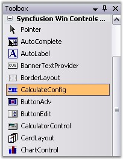
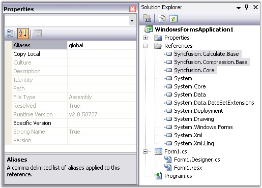

Now, you have created a Windows application (refer Creating Platform Application). This section illustrates how to deploy Essential Calculate into this Windows application.
Deploying Essential Calculate in a Windows Application
The following steps will guide you to deploy Essential Calculate:
1. Open the main form of the application in the designer.
2. Add the Syncfusion controls to your VS.NET toolbox if you haven't done so already [This is done automatically when you install Essential Studio].
3. In order to use the Essential Calculate library in your project, add the CalculateConfig component found in the toolbox to a project to enable support for Calculate.

Figure 13: Toolbox
This will add references to the following dependent assemblies of your project:
· Syncfusion.Core.dll
· Syncfusion.Compression.Base.dll
· Syncfusion.Calculate.Base.dll

Figure 14: Solution Explorer
4. The libraries are added to the GAC during the product installation. Note that the CalculateConfig is a component provided for convenient usage of Essential Calculate. Hence, the product can also be used just by manually adding reference to the above assemblies.
 Note:
For detailed documentation on Windows
Application deployment, see http://www.syncfusion.com/support/user/uploads/DeployingWindowsApplication_bdaf76f7.pdf
Note:
For detailed documentation on Windows
Application deployment, see http://www.syncfusion.com/support/user/uploads/DeployingWindowsApplication_bdaf76f7.pdf
5. Then create a CalculateEngine. The CalcQuickBase class is used to create a CalculateEngine.
|
[C#]
// Create a new CalculateQuickBase. This object represents the CalculateEngine. CalcQuickBase cq = new CalcQuickBase(); |
|
[VB.NET]
' Create a new CalculateQuickBase. This object represents the CalculateEngine. Dim cq As CalcQuickBase cq = New CalcQuickBase() |
6. Use the ParseAndCompute method to perform calculations by using the CalculateEngine.
|
[C#]
// Perform calculations by using Essential Calculate. string formula = "if(20>10,\"BIG\",\"Small\")"; string value = cq.ParseAndCompute(formula); |
|
[VB.NET]
' Perform calculations by using Essential Calculate. Dim formula As String = "if(20>10,""BIG"",""Small"")" Dim value As String = cq.ParseAndCompute(formula) |
7. You can also modify the default behavior of the CalculateEngine by using the Engine property.
Example
The default format of appending quotation marks to the concatenated string can be eliminated by using the following code.
|
[C#]
// Strings concatenated by using the ampersand operator will be returned without quotation marks. cq.Engine.UseNoAmpersandQuotes = true; |
|
[VB.NET]
' Strings concatenated by using the ampersand operator will be returned without quotation marks. cq.Engine.UseNoAmpersandQuotes = True |
Note: Engine is a class that is defined as a
"property" in Essential Calculate.
Essential Calculate is deployed in your Windows application.